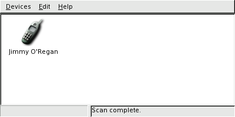
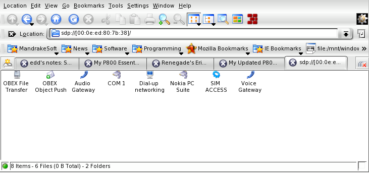

Accessing a Bluetooth phone
I recently bought a Nokia 6820. After years of using a 5110, I wanted to get a phone with all the bells and whistles: Bluetooth, Infrared, Java, Camera, etc. The 6820 not only does these things, but it also has a video camera, so I was sold on it. (Plus, my brother has had one for a few months without having any problems and I got Blackberry email on it).
As it happens, there was a story in the news about Nokia malware, but this doesn't affect my phone, and it seems you have to be incredibly gullible to be affected.
The first thing you'll need to do is install Bluez. You may need to patch your kernel, but I didn't, so I'm not going to go into that. As well as whatever 'libbluez' packages your distro has, you'll also need the 'bluez-utils', 'bluez-bluefw', and 'bluez-pin' packages (though the 'bluez-pin' package will probably not be necessary if you're using KDE).
To transfer files to and from your phone, you'll also need OpenOBEX. Even if you never use the command line, the libraries supplied by this project are used by both GNOME and KDE.
ObexFTP is really useful from the command line, and from scripts. I have a short script that grabs what my phone is seeing using Gammu and ObexFTP.
Setting up
At first, my Bluetooth adaptor refused point blank to be recognized, giving me this output:
# hciconfig
hci0: Type: USB
BD Address: 00:00:00:00:00:00 ACL MTU: 0:0 SCO MTU: 0:0
DOWN
RX bytes:0 acl:0 sco:0 events:0 errors:0
TX bytes:0 acl:0 sco:0 commands:0 errors:0
Eventually, Google lead me to this page, which has this note:
For some reason the USB dongle does not work right after loading modules the hciconfig outputs a 00:00:00:00:00:00 address to the card. The dongle did wake up after I did a hciconfig hci0 down && hciconfig hci0 up.
This was the tip I needed. hcitool gave me some real output:
# hciconfig
hci0: Type: USB
BD Address: 00:0F:3D:3D:43:36 ACL MTU: 192:8 SCO MTU: 64:8
UP RUNNING PSCAN ISCAN
RX bytes:77 acl:0 sco:0 events:9 errors:0
TX bytes:31 acl:0 sco:0 commands:8 errors:0
I can now search for my phone using hcitool. Once I've
found it, hcitool can then give me more information, or I can use
l2ping to check the connection:
$ hcitool inq
Inquiring ...
00:0E:ED:80:7B:38 clock offset: 0x433d class: 0x520204
$ hcitool scan
Scanning ...
00:0E:ED:80:7B:38 Jimmy O'Regan
# hcitool info 00:0E:ED:80:7B:38
Requesting information ...
BD Address: 00:0E:ED:80:7B:38
Device Name: Jimmy O'Regan
LMP Version: 1.1 (0x1) LMP Subversion: 0x380
Manufacturer: Cambridge Silicon Radio (10)
Features: 0xbf 0xee 0x0f 0x00 0x00 0x00 0x00 0x00
<3-slot packets> <5-slot packets> <encryption> <slot offset>
<timing accuracy> <role switch> <sniff mode> <RSSI>
<channel quality> <SCO link> <HV3 packets> <u-law log>
<A-law log> <CVSD> <paging scheme> <power control>
<transparent SCO>
# l2ping 00:0E:ED:80:7B:38
Ping: 00:0E:ED:80:7B:38 from 00:0F:3D:3D:43:36 (data size 20) ...
0 bytes from 00:0E:ED:80:7B:38 id 200 time 48.85ms
0 bytes from 00:0E:ED:80:7B:38 id 201 time 32.08ms
2 sent, 2 received, 0% loss
hcid, the daemon that provides the above, requires D-Bus to be running; dbus-daemon-1 --system works for me. You also need to have sdpd running: this lets other devices know which services your computer provides.
Once you're able to see the phone, you'll need to configure hcid. I had a problem at this stage, because one of the many pieces of software I installed kept adding a second PIN helper program.
To use most of the services on a mobile (or most Bluetooth devices, as far as I can tell), the mobile and the computer must first be paired. Basically, this involves both having the same PIN code entered -- just imagine how horrible it would be if anyone could browse around the files on your phone, or use your computer as an Internet gateway.
This is what my hcid.conf file looks like:
options {
autoinit yes;
security user;
pairing multi;
pin_helper /usr/lib/kdebluetooth/kbluepin;
}
# Default settings for HCI devices
device {
# Local device name
# %d - device id
# %h - host name
name "jimmy";
# Local device class
class 0xff0100;
# Default packet type
#pkt_type DH1,DM1,HV1;
# Inquiry and Page scan
iscan enable; pscan enable;
# Default link mode
# none - no specific policy
# accept - always accept incoming connections
# master - become master on incoming connections,
# deny role switch on outgoing connections
#
lm accept,master;
# Default link policy
# none - no specific policy
# rswitch - allow role switch
# hold - allow hold mode
# sniff - allow sniff mode
# park - allow park mode
#
lp hold,sniff,park;
# Authentication and Encryption
#auth enable;
#encrypt enable;
}
The most important part is the class line, which describes the capabilities of the PC to any Bluetooth device that comes in range. It also seems to be important to disable the auth and encrypt lines when you're talking to a mobile phone.
The pin_helper line is probably the least important detail: it's necessary, don't get me wrong, but most of the software available for accessing bluetooth devices seem to come with its own PIN helper, and I don't really see why: the PIN helper does little more than return 'PIN:xxxx' (where 'xxxx' is the PIN).
ObexFTP
ObexFTP is really intended to be a backend command, but it's still usable as a command line application.
To list a path: obexftp -b [phone address] -l [path]
To get a file: obexftp -b [phone address] -g [path]
Phone Video
Nokia phones save their video as '.3gp' files. These are quicktime files with audio that uses the samr codec, and video that uses the H.263 codec (called s263 in the files).
To play the video, just find this section of your .mplayer/codecs.conf:
videocodec ffh263 info "FFmpeg H263+ decoder" status working fourcc H263,U263,h263,X263 fourcc viv1 h263 driver ffmpeg dll h263 out YV12,I420,IYUVand change the first 'fourcc' line to
fourcc H263,U263,h263,X263,s263
The audio is a little more awkward: you have to download two zip files and unzip them as subdirectories of the avcodecs directory of ffmpeg (or mplayer): amr and amr_float.
This is required because there is no explicit copyright on the code - if it was properly open source, it'd be part of ffmpeg, but as it is, things are vague -- and as Thomas said, "Vagueness makes baby Jesus cry".
I've included a sample video anyway, though, of my friend Marion (yes, she loves the camera, but it's mutual).
Desktop integration
Both GNOME and KDE have Bluetooth integration available. (On Mandrake, the packages are 'gnome-bluetooth' and 'kdebluetooth', respectively).
GNOME Bluetooth comes with a desktop daemon that listens for incoming OBEX transfers, and integrates with Nautilus to allow you to send files from the file manager.
KDE's Bluetooth support is part of KDE. Its support is a lot more extensive than GNOME's: it allows you to use your computer's audio equipment as a hands-free kit, for example. It also allows scripts to be run whenever a certain device comes within range, so you can have your files backup without intervention.
KDE's ioslaves provide a convenient set of URI types to allow you to use Bluetooth. bluetooth:/ allows you to see which devices are in range, sdp://[00:0E:ED:80:7B:38]/ shows the services available on the specified device, and obex://[00:0e:ed:80:7b:38]:10/ allows you to treat your phone as if it were a regular filesystem.
Gnokii
Gnokii is a program that gives access to many of the features of Nokia phones. It's been around for years, and though it doesn't support many of the features of newer phones, it's still useful to have around.
First of all, edit your .gnokiirc. To use bluetooth, you need to set connection = bluetooth and port to the address of your phone. If your phone isn't supported, it shouldn't be too hard to find a similar model that is.
[global] port = 00:0E:ED:80:7B:38 #Gnokii doesn't know about my phone yet. model = 6310i initlength = default connection = bluetooth #It's recommended to set this to 'yes', but it doesn't work for me use_locking = no serial_baudrate = 19200 rfcomm_channel = 1 smsc_timeout = 10
The first step is to make sure that gnokii can see the phone:
$ gnokii --identify GNOKII Version 0.6.3 IMEI : xxxxxxxxxxxxxxx Manufacturer : Nokia Model : NHL-9 Revision : V 4.25
You can check the results by typing *#0000# on the phone, which gives a result like this:
V 4.25 27-05-04 NHL-9 (c) Nokia
The most useful feature that Gnokii has (and that Gammu lacks) is the ability to grab the contacts list from your phone and convert it into a useful format. This command takes the contacts from the phone's memory (ME), starting at 1 and continuing to the end, saving it as a VCard (-v).
gnokii --getphonebook ME 1 end -v > phone.vcs
Another feature I like is 'getnetworkinfo', because it tells you which cell you're currently in. There are a number of programs available for Series 60 phones that work like a mini-GPS, and can trigger actions on the phone based on where you are, but I haven't found any that will work on mine. At least I can console myself with the knowledge that the information is there.
$ gnokii --getnetworkinfo GNOKII Version 0.6.3 Network : O2 Communications (Ireland) Ltd (Ireland) Network code : 272 02 LAC : 4a56 Cell id : 20b1
Gammu
Gammu started as a fork of Gnokii, but has much better support for newer phones. (It does lack some of Gnokii's features, though, so both are worth using).
Like Gnokii, you need to set up your .gammurc file first.
[gammu] device = 00:0e:ed:80:7b:38 #Gammu doesn't support the 6820 either model = 6800 connection = bluephonet synchronizetime = no logfile = gammulog logformat = textall #same problem as gnokii use_locking = no gammuloc = locfile startinfo = yes gammucoding = utf8
Unlike Gnokii, Gammu doesn't provide common output formats for contacts etc. Also unlike Gnokii, Gammu has got a Python interface available, so I'll see if I can manage to get something useful done for next month.
I mentioned earlier that I have a script that lets me see what
my phone currently sees. This would be a lot more useful if the
camera wasn't on the bottom of the phone, but it's a great way to
amuse myself son.
#!/bin/bash gammu --nokiamakecamerashoot obexftp -b 00:0E:ED:80:7B:38 -g Gallery/GammuShot display GammuShot
Open Source software for the Phone
The first hurdle in using most software on a mobile phones is that most providers have two sets of internet access settings: one for WAP, the other for full access. Fortunately, there's a Linux-friendly site that provides details about most European providers: Easy Connect.
You can use Gammu to install software to your phone by using this command:
gammu --nokiaaddfile Application Virca
This looks for two files, Virca.jar and Virca.jad, which it then sends to the phone. To install a game, change 'Application' to 'Game'.
The first piece of software I installed was Telnet midlet. (There's also an SSH midlet available from the same site). I managed to connect to a server without fuss, but quickly became frustrated with the input method it uses -- any input has to be done through a separate screen, which is the perfect method for most phones, but painful on mine, which has a fold-out keyboard. MidpSSH is a SSH client, based on Telnet midlet, that supports Telnet, SSH1 and SSH2. It looks to have a much better interface, but unfortunately none of the many versions provided would work on my phone.
Virca is an open source IRC client for MIDP 1.0 compliant devices. It doesn't support things like DCC, but it's quite impressive for such a small package. I can imagine it being useful on long journeys.
Looking at the things that are possible with the phone, I'm tempted to learn Java (despite Thomas's warnings).
If anyone knows of any good MIDP 1.0 programs, please let me know! I want to see how much my phone can do!
Jimmy has been using computers from the tender age of seven, when his father
inherited an Amstrad PCW8256. After a few brief flirtations with an Atari ST
and numerous versions of DOS and Windows, Jimmy was introduced to Linux in 1998
and hasn't looked back.
In his spare time, Jimmy likes to play guitar and read: not at the same time,
but the picks make handy bookmarks.
![[BIO]](../gx/2004/authors/oregan.jpg) Jimmy is a single father of one, who enjoys long walks... Oh, right.
Jimmy is a single father of one, who enjoys long walks... Oh, right.